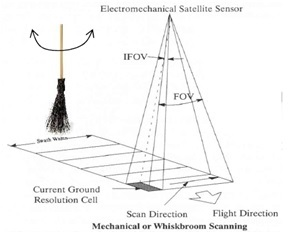
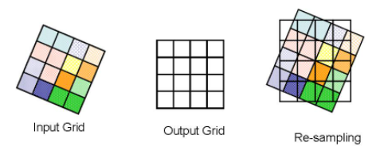
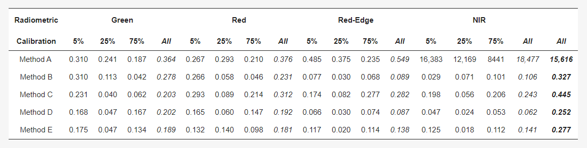
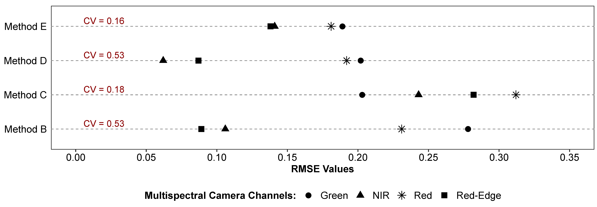
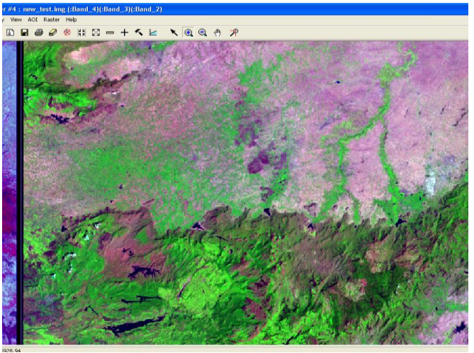
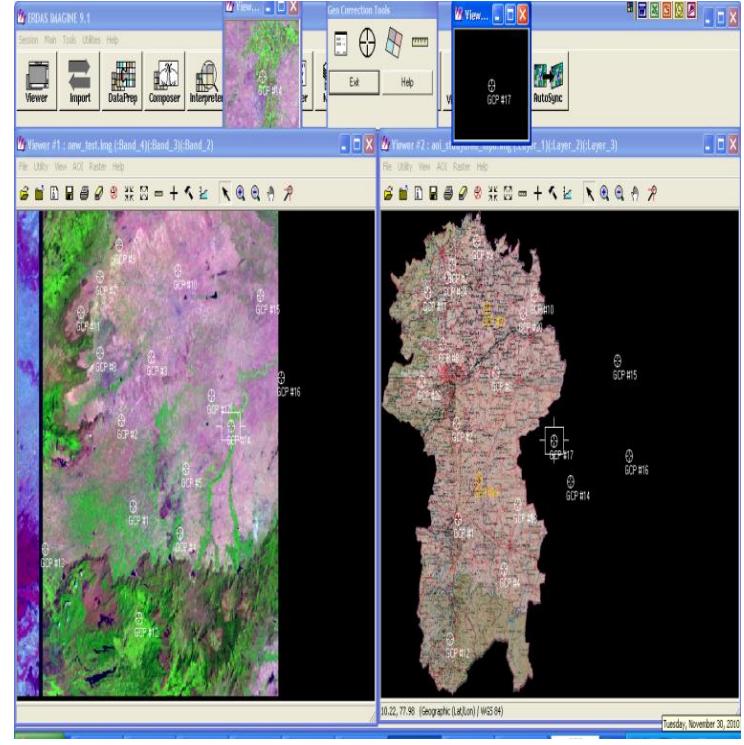

3 Remote sensing data
3.1 summary
3.1.1 sensor scanner
How to acquire multispectral image data
- push broom
Collection method: The detector is perpendicular to the direction of flight of the spacecraft and acquires one image at a time
Data collection: Measure all pixels in a row of images at the same time
Example:Spot and Orbview
- Whisk broom
Collection method: The detector collects the field of view scanned by the detector as the direction of the rotating mirror changes
Data collection: Acquisition of images in a wide range of narrow spectral bands from the visible to mid-infrared spectrum
Example:Landsat

- Compare
A push broom scanner receives a stronger signal than a whisk broom scanner, because it looks at each pixel area for longer.
3.1.2 Connection
3.1.2.1 geometric connection
why we need to doing the geometric connection?
- View angle (off-nadir)
- Nadir means directly down
- Topography (e.g. hills not flat ground)
- Wind (if from a plane)
- Rotation of the earth (from satellite)
how we do the geometric connection?
Identify the GPS
compute the geometric transformation coefficients and optain the geographic coordinates
resample to populate new output grid
RMSE
The model with the lowest RMSE will fit best—-always set the value is RMSE
In order to reduce the PMSE, we need to re-sample the final raster.
Resample methods
- Nearest Neighbor
- Linear
- Cubic
- Cubic spline

3.1.2.2 Atmospheric correction
why we do the atmospheric connection?
Atmospheric scattering
Topographic attenuation
And in biophysical parameters, we need to do the atmosphere connection. for example, temperature, lead area index, NDVI
Atmospheric correction types
- Relative
Normalize intensities of different bands within a single image and normalize intensities of bands from many dates to one date
- Absolute
use the atmospheric radiative transfer models to change digital brightness values into scaled reflectance and then compare these scaled surface reflectance values across the planet.
data requirements–an atmopsheric model, local atmopsheric visibility, Image altitude
3.1.2.3 Orthorectification correction
- when use the orthorectification correction?
Raw satellite imagery contain distortions, which are induced by sensor orientation, topographical variation and the curvature of the earth.
- accurate elevation models are key.
Feature distortion on raw imagery is heavily impacted by terrain variation. An accurate elevation model is required to calculate the effect of terrain variation on the image pixels.
3.1.2.4 Radiometric Calibration
Radiometric calibration is a crucial part of processing multispectral imagery, it enables the conversion of raw digital numbers (from the raw imagery), to sensor reflectance or irradiance, and then to surface reflectance values. Using a radiometric workflow enables the collection of repeatable reflectance data over different flights, dates, and weather conditions.
Without radiometric calibration, you may see the following effects:
- Underexposed images, especially surrounding bright objects on the landscape
- Irregular coloration
- Index values, such as NDVI, that appear to change dramatically and unexpectedly + near roads or buildings
- Extreme banding or patchiness in the mosaic
3.2 Application
Multispectral UAS Data Accuracy for Different Radiometric Calibration Methods The performance of five radiometric calibration methods commonly used was investigated in this study. Multispectral imagery was collected using a Parrot Sequoia camera. Unmanned aircraft systems (UAS) allow us to collect aerial data at high spatial and temporal resolution in this study. And radiometric calibration is an essential step of UAS data processing, mainly when imagery is acquired for the analysis of biophysical processes, to monitor a study area over time, and to compare different sensors .The five methods are one-point calibration (method A), one-point calibration plus sunshine sensor (method B), pre-calibration using the simplified empirical line calibration (method C) , one-point calibration plus sunshine sensor plus post-calibration(method D), and post-calibration using the simplified empirical line calibration (method E). The paper found there are no method that can have the best performance in every band.
Through comparing the five methods, there are the RmsE values.

Through the RMSE values for each calibration method, the author found the following results. Data accuracy varied between the multispectral bands (Figure 7). For methods B and E, pixel reflectance values were more accurate in the red-edge and NIR band than in the green and red bands. For method D, pixel reflectance values were more accurate in the NIR and red-edge bands than in the green and red bands. Maximum differences between bands were observed for methods B and D. Minimum differences were observed for method E, closely followed by method C.

On average, method D minimized error across bands and grey values closely followed by method E. Method D resulted in better data accuracy than method B, and results indicated that data quality provided by the manufacturer-recommended calibration could be further improved with an empirical calibration. Method E resulted in better data accuracy than method C, and results showed that calibrating the processed uncalibrated rasters would be preferable to calibrating the raw images before data processing. Method A provided lower data accuracy than the other four methods in the green, red, and red-edge bands. Method A failed to calibrate acquired imagery in the NIR band. The result is that there are no method that can have the best performance in every band.
Multispectral UAS Data Accuracy for Different Radiometric Calibration Methods
What’s more, about the geometric connection,this paper shows the geometric correction process done in the Coimbatore imagery to improve the quality and it shows the process of distortion removed .Finally they get the georectified image using ERDAS(Baboo and Devi, 2011).
A geometric correction of the image is required whenever the image is to be compared with existing maps or with other images. The goal of image rectification is to facilitate the overlay of additional imagery and other geographic data sets. A standard map area, with boundaries set in UTM, is established for each scene, thus all image files for the same region, once rectified, will occupy the same map area.Once the raw remote sensing digital data has been acquired, it is then processed into usable information.Processing digital data involves changing the data to correct for certain types of distortions. Whenever data is changed to correct for one type of distortion, the possibility of the creating another type of distortion exists. There is an example to show the importance on the pre-processing.Because the Coordinates not in British National Grid coordinates.

The below Figure explain the image to map geocorrection and we can see the ground control point spread all over the map.Right side of the image is study area of the Coimbatore toposheets.Adding GCP from a map is easy and straightforward. However, care should be taken when choosing the correct position of a GCP, as a scanned map might add to the RMS error, because roads tend to be drawn wider than they actually are, or even slightly displaced, i.e.University Road is said to be approximately 30m wide. In addition, the pixel size of the map is 3m; the image itself operates with 30m, which is another source of error in correct placement of GCP.

3.3 Reflection
In this week’s study, I learnt about remote scanners and calibration, among other things. Before using remote sensing data, we have to carry out data pre-processing, such as atmospheric correction, to eliminate the influence of atmospheric medium on the brightness value of remote sensing images, so that the remote sensing images reflect the real surface reflectance of the features, which can provide the basic data for the subsequent extraction and application of remote sensing information. What’s more, geometric correction of remote sensing is a fundamental step in remote sensing image processing and an important link in the application of remote sensing technology. Through geometric correction, accurate correspondence can be established between remote sensing images in terms of spatial position and actual ground position, providing basic data for remote sensing information extraction and application.